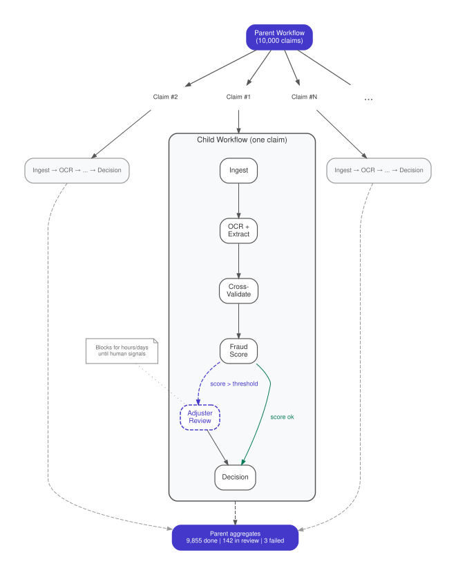

The Pipeline (Checkpoint Chain)
Process items through sequential stages where each completed stage is a durable checkpoint — and orchestrate thousands of such pipelines in parallel with per-item visibility, retry, and human-in-the-loop stages.
Intent. A workload requires processing many items through a sequence of stages — some automated, some involving external APIs with rate limits, some requiring human judgment. Each item must progress independently: if item #7,432 fails at stage 3, only that item retries. A parent workflow orchestrates the fan-out and tracks aggregate progress. The Pipeline pattern makes each stage a durable checkpoint and each item an independent child workflow.
Motivation. An insurance company receives 10,000 claims per day. Each claim is a bundle of documents — photos of damage, repair estimates, police reports. Every claim must pass through the same stages: ingest the documents, run OCR and field extraction, cross-validate the extracted data (does the repair estimate match the damage photos? does the police report date match the claim date?), score for fraud using an external ML service, and — if the fraud score exceeds a threshold — route to a human adjuster for review before rendering a final decision.
The stages have wildly different characteristics. Ingestion takes seconds. OCR takes a minute. The fraud-scoring API is rate-limited to 50 requests per second. And adjuster review takes hours or days — a human opens the claim, examines the documents, and signals their decision when ready.
The operations team needs two levels of visibility. At the parent level: "We received 10,000 claims yesterday. How many completed? How many are waiting for adjuster review? How many failed permanently?" At the child level: "Claim CLM-2024-8891 — what stage is it in? When did it enter adjuster review? Who is the assigned adjuster?"
The Pattern

A Parent Workflow receives a batch of items and fans them out as Child Workflows — one per item. Each child executes the pipeline stages as sequential activities, with each completed activity serving as an automatic checkpoint. The parent tracks aggregate progress: how many children completed, how many are in-flight, how many failed.
Each child is independent. If claim #7,432 fails at the fraud-scoring stage (the external API returned a transient error), only that child retries — the other 9,999 are unaffected. If the fraud score exceeds the threshold, the child blocks on an external message (a signal in Temporal) — the adjuster’s decision — which may arrive hours later. The child’s state is fully queryable at any time: "this claim passed OCR, passed validation, scored 0.87 fraud risk, and is currently waiting for adjuster Smith."
The parent controls concurrency. Instead of launching 10,000 child workflows simultaneously (which would overwhelm the fraud-scoring API), it fans out in batches — 500 at a time, for example — respecting downstream rate limits. The parent itself is a durable workflow, so if it crashes mid-fan-out, it replays and resumes from the last batch it launched.
Traditionally, you’d reach for a DAG scheduler like Airflow. But Airflow processes batches, not items. The "fraud scoring" task in an Airflow DAG scores all 10,000 claims as a single task. If claim #7,432 fails, Airflow retries the entire task — or you build per-item tracking inside the task yourself. And the adjuster review stage? Airflow has no concept of "pause this item and wait for a human signal." You’d wire up an external sensor that polls a database, plus a separate UI for adjusters to record decisions, plus a reconciliation job to detect claims stuck in review. The pipeline framework handles the DAG; everything per-item is on you.
With Durable Execution. Each stage is an activity. The child workflow calls them sequentially. Checkpointing is automatic:
@workflow.defn
class ETLPipelineWorkflow:
@workflow.run
async def run(self, input: PipelineInput) -> str:
# Stage 1: Parse — checkpoint after completion
parsed = await workflow.execute_activity(
parse_csv,
input.source_path,
start_to_close_timeout=timedelta(minutes=10),
)
# Stage 2: Validate — crash here, replay skips Stage 1
validated = await workflow.execute_activity(
validate_schema,
parsed,
start_to_close_timeout=timedelta(minutes=5),
)
# Stage 3: Enrich — the expensive stage
enriched = await workflow.execute_activity(
enrich_records,
validated,
start_to_close_timeout=timedelta(hours=2),
)
# Stage 4: Load — final stage
loaded_count = await workflow.execute_activity(
load_to_warehouse,
args=[enriched, input.destination_table],
start_to_close_timeout=timedelta(minutes=30),
)
return f"Pipeline complete: {loaded_count} records loaded to {input.destination_table}"Each await workflow.execute_activity(…) call is a durable checkpoint. When
parse_csv completes, the runtime records its result — the ParseResult
dataclass — in the workflow’s event history. If the worker crashes after
validate_schema but before enrich_records, the runtime assigns the workflow
to a new worker, replays the code, returns the cached results of parse_csv
and validate_schema without calling them again, and resumes at the
enrich_records call.
The code example shows a simplified ETL pipeline to keep the listing readable,
but the structure maps directly to the insurance scenario: replace parse_csv
with ingest_documents, validate_schema with cross_validate,
enrich_records with score_fraud, and load_to_warehouse with
render_decision. For the human-review stage, the child workflow would call
workflow.wait_condition() — blocking durably until the adjuster signals their
decision, exactly like the Durable Promise pattern
(Chapter 3).
The parent workflow fans out children and tracks progress:
# Parent workflow (simplified)
results = []
for batch in chunks(claim_ids, size=500):
futures = [
workflow.execute_child_workflow(claim_pipeline, claim_id)
for claim_id in batch
]
results.extend(await asyncio.gather(*futures, return_exceptions=True))Querying the parent gives aggregate status. Querying any child gives per-item status. Retrying a single failed child costs nothing — the completed stages replay from history instantly and only the failed stage re-executes.
Consequences. The Pipeline pattern gives you two levels of observability that DAG schedulers don’t provide natively. The parent answers "did we handle yesterday’s claims?" The children answer "what happened to this specific claim?" Both are queryable through the runtime — no separate status-tracking database required.
The primary constraint is fan-out scale. Each child workflow has its own event history. 10,000 children with 6 stages each means 60,000+ history events across the system. This is well within a typical durable execution platform’s capacity, but at 100,000+ children you should consider hierarchical decomposition: a parent fans out to 100 sub-parents, each managing 1,000 children.
Payload size is another consideration. Activity inputs and outputs are serialized into the event history. Each activity result must be serializable and must fit within the runtime’s payload size limit (4 MB for Temporal’s gRPC messages). For stages that produce large intermediate results, the activity should write to external storage (S3, a staging table) and return a reference — a file path or table name — rather than the data itself.
Human-in-the-loop stages are where this pattern most clearly separates from traditional pipeline tools. A stage that blocks for days waiting for a human signal is natural in durable execution (it’s just a workflow waiting on a condition) but alien to DAG schedulers, which expect tasks to start and finish within a timeout.
Distinction from Code-as-State. Code-as-State (Chapter 2) and the Pipeline
are structurally identical — both are sequential workflows where each await is
a checkpoint. The distinction is intent. Code-as-State models a business
process (order fulfillment, onboarding). The Pipeline models a data
transformation where each stage takes input data and produces output data for
the next stage. The Pipeline adds the parent/child fan-out dimension that
Code-as-State doesn’t need.
Known Applications
-
Insurance claims processing — ingest, OCR, validate, fraud score, adjuster review, decision
-
Document processing — ingest, OCR, classification, entity extraction, human verification, storage
-
Loan origination — application intake, credit check, underwriting (human), compliance review, disbursement
-
ML inference at scale — per-item prediction pipelines with human-in-the-loop quality review
-
Order fulfillment — per-order pipelines across picking, packing, shipping, with exception handling for out-of-stock items
Related Patterns
-
Code-as-State (Chapter 2) — the same structure applied to business processes rather than data transformations
-
Scatter-Gather (Chapter 6) — individual stages may use scatter-gather internally for parallel processing within a stage
-
The Durable Promise (Chapter 3) — human-in-the-loop stages use the promise pattern to block until a signal arrives